PhD Students
2026
Master Students
2026
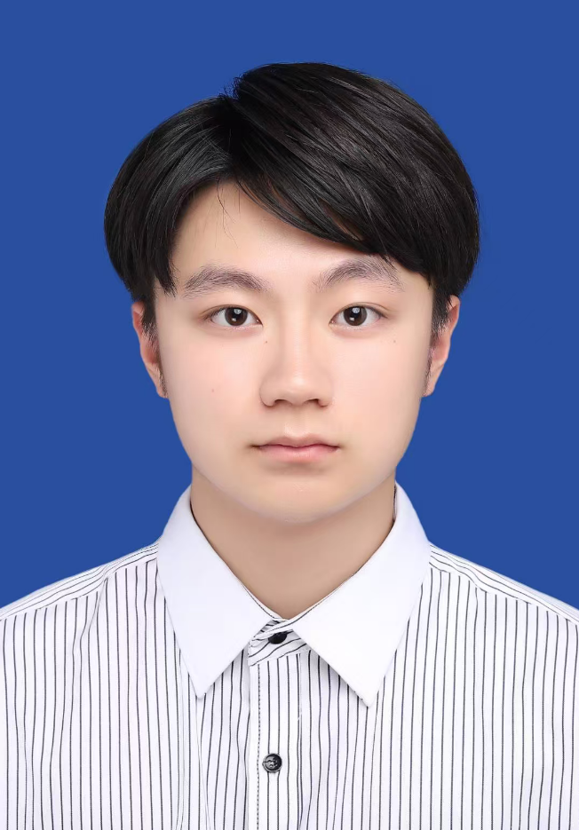
Zhengtiao Mao
Yan Pan
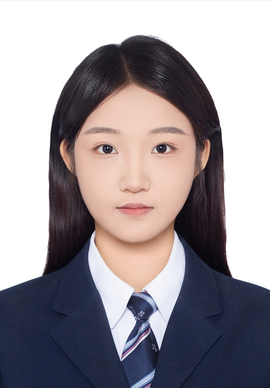
Jiahan Lian
Mengxue Jia
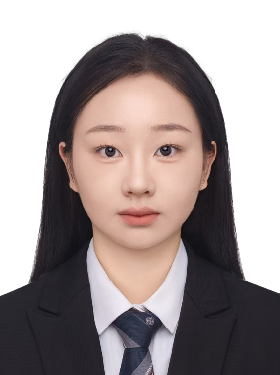
Yan Li
Junwei Sun
Hao Wang
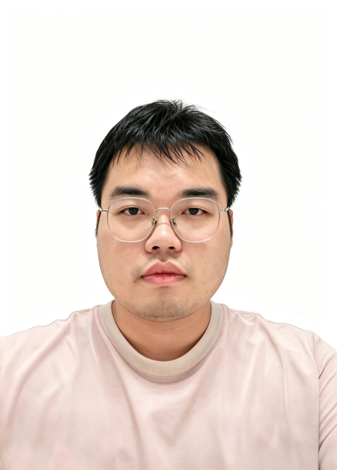
Guanhan Tong
Peiyi Zhang
(Co-supervised with Assoc. Prof. Tao Yang)2025
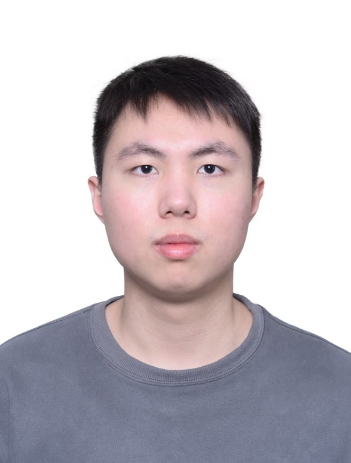
Mingxuan Ye
Yiqiao Lu
Yirong Wang
Lihuan Zhao
(Co-supervised with Mr. Chunyu Miao)
Jinquan Ye
(Co-supervised with Assoc. Prof. Tao Yang and Mr. Chunyu Miao)
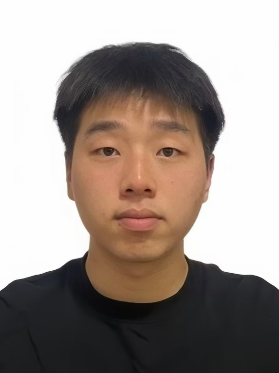
Xinyu Deng
(Co-supervised with Assoc. Prof. Tao Yang)
Liyang Wei
(Co-supervised with Prof. Changting Lin)
Sizhan Chai
Shiting Xu
Kecheng Li
(Co-supervised with Prof. Guiyi Wei, from SIEE, ZJGSU)
2024
Xingyu Zhao
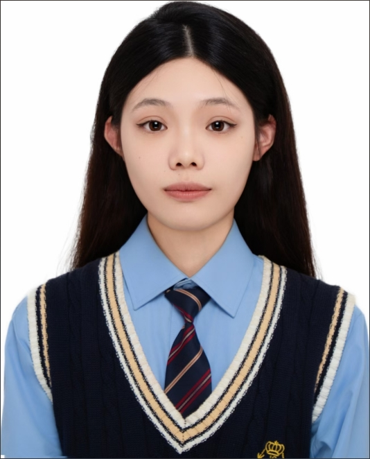
Lan Yang
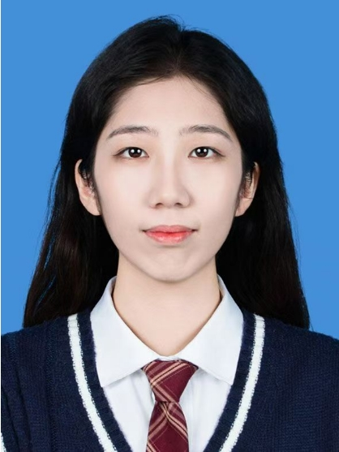
Shuyu Zheng
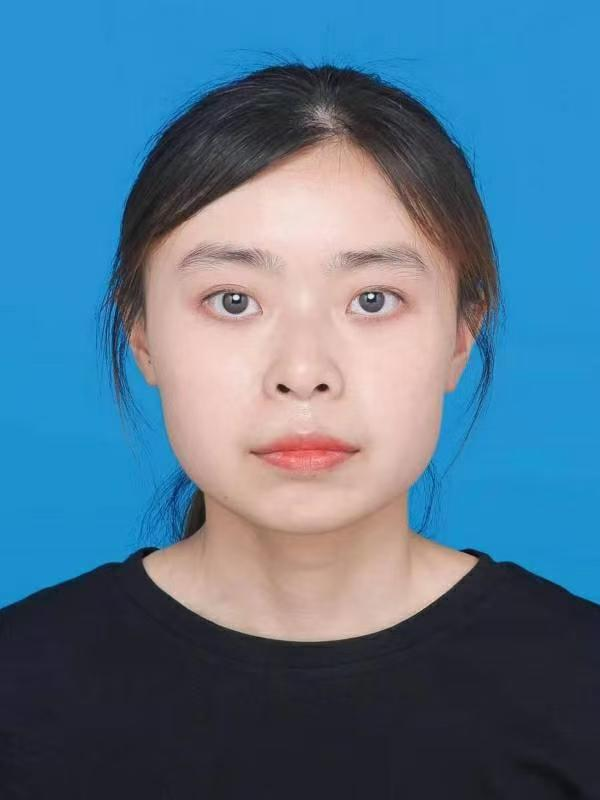
Fang Jiang
Tongzhao Liu
(Co-supervised with Assoc. Prof. Tao Yang)
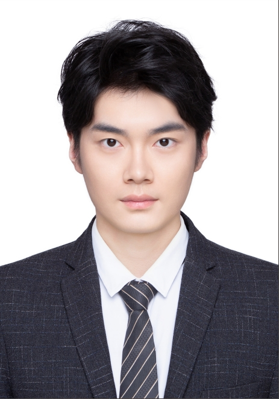
Jie Xie
Penghui Fang
(Co-supervised with Mr. Chunyu Miao)
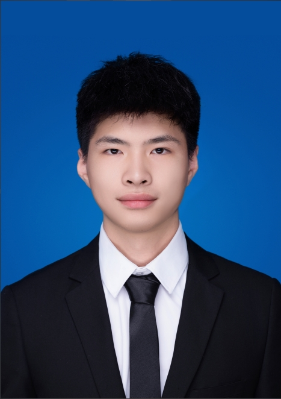
Zhichao Zhu
(Co-supervised with Prof. Changting Lin)
2023
Ziyi Wang
Weicheng Yao
Pubin Jiang
Chengyu Jin
Long Zhao
(Co-supervised with Assoc. Prof. Xin Hou)
Hongming Yang
(Co-supervised with Prof. Changting Lin)
Qi Chen
Qinghuan Liu
(Co-supervised with Assoc. Prof. Tao Yang)
Zhen Zhuang
(Co-supervised with Prof. Huiyan Wang)
Zhiqiang Pan
(Visiting student from Huzhou University, Co-supervised with Prof. Jungang Lou)
2022
2021
2020
2019
2018
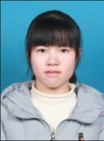
Bianjing Pan
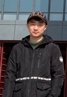
Yekun Ren
Jianmin Kong
Xiaohang Mao
(Co-supervised with Prof. Guiyi Wei)
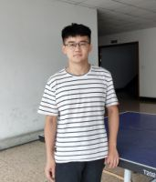
Hang Zhang
(Co-supervised with Prof. Haiyong Bao)
2017
2016
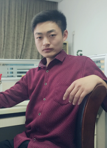
Fengwang Wu
Jinyan Hua
(Co-supervised with Prof. Haiyong Bao)
Yunguo Guan
(Co-supervised with Prof. Guiyi Wei)
Jizhang Wang
(Co-supervised with Prof. Yun Lin)
2015
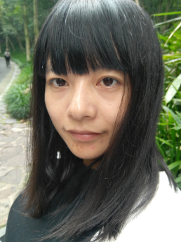
Xinxin Ma
2014
Shuangmin Zhang
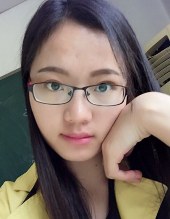
Dan Feng
(Co-supervised with Prof. Haiyong Bao)
2013
Yulin Pan
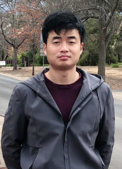
Cong Zuo
(Co-supervised with Prof. Yun Lin)
Zhongxiang Lu
(Co-supervised with Prof. Guiyi Wei)
2011
Jinlin Zhang
(Co-supervised with Prof. Yun Lin)
2010
Pingping Zhu
(Co-supervised with Prof. Guiyi Wei)
Xianbo Yang
(Co-supervised with Prof. Guiyi Wei)